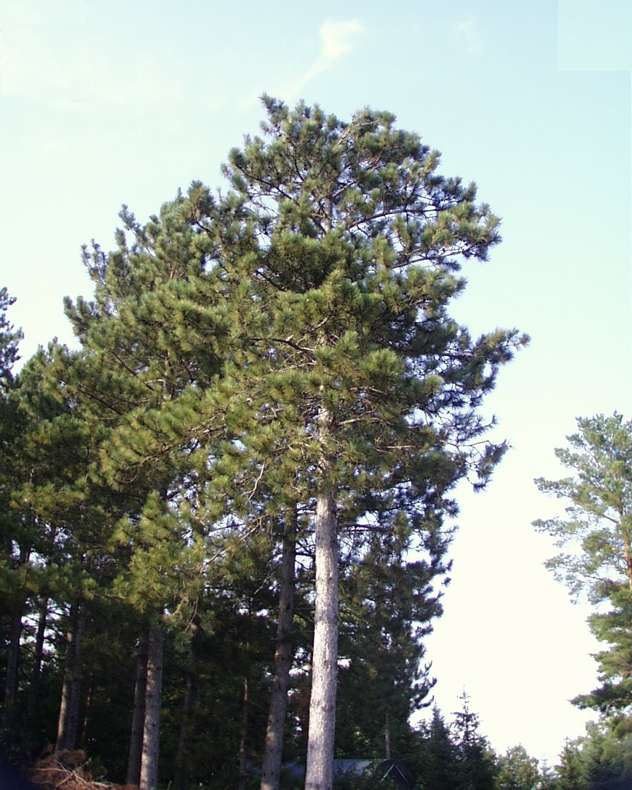

library(dplyr)
tree_dat <-read.csv("data/tree_dat.csv")
glimpse("tree_dat") chr "tree_dat"In this dataset, it appears to be a 131,386 by 8 table of a tree growth analysis for 15 different tree species from 1897 to 2007. Within it, the columns consist of the treeID, standID, stand, year, species, age, inc (linear growth increment), and rad_ib (bark radius at breast height).
library(dplyr)
tree_dat <-read.csv("data/tree_dat.csv")
glimpse("tree_dat") chr "tree_dat"In stand 1, there have been 979 records made.
tree_dat %>%
filter(standID == 1) %>%
tally() n
1 979For the Abies balsamea, there have been 13,033 records made. For the Pinus strobus, there have been 4,188 records made.
tree_dat %>%
filter(species %in% c("ABBA", "PIST")) %>%
count(species) species n
1 ABBA 13033
2 PIST 4188In the last year of the tree_dat dataset, there are 7 trees older than 200 years.
last_year <- max(tree_dat$year, na.rm = TRUE) #finds last yr in the data set
tree_dat %>%
filter(year == last_year, age > 200) %>%
tally() #counts trees older than 200 yrs in the last yr n
1 7The oldest tree in the dataset is the Pinus resinosa, which is 296 years old.
tree_dat %>%
slice_max(order_by = age, n=1) treeID standID stand year species age inc rad_ib
1 24 2 A2 2007 PIRE 269 0.37 308.84The 5 oldest trees recorded in 2001 are two Pinus resinosa (263, 259) and three Fraxinus nigra (212, 206, 206).
tree_dat %>%
filter(year == 2001) %>%
slice_max(order_by = age, n = 5) treeID standID stand year species age inc rad_ib
1 24 2 A2 2001 PIRE 263 0.210 306.880
2 25 2 A2 2001 PIRE 259 0.280 156.210
3 1595 24 F1 2001 FRNI 212 0.579 156.267
4 1598 24 F1 2001 FRNI 206 0.394 130.251
5 1712 26 F3 2001 FRNI 206 0.168 154.354In a 30% sample of recorded trees in 2002, there are 687 trees. (did not show output since it was a large table)
tree_dat %>%
filter(year == 2002) %>%
slice_sample(prop = 0.3)In descending order of tree radius at breast height in stand 5 in 2007, the trees are #128 (Pinus strobus), #157 (Pinus resinosa), and #135 (Picea mariana).
tree_dat %>%
filter(standID == 5, year == 2007) %>%
arrange(desc(rad_ib)) %>%
slice_head(n = 3) treeID standID stand year species age inc rad_ib
1 128 5 A6 2007 PIST 82 0.885 238.8850
2 157 5 A6 2007 PIRE 85 0.900 217.8700
3 135 5 A6 2007 PIMA 84 0.110 210.1874The smallest three trees in stand 3 measured in 2007 in descending order are #50, #56, and #36.
tree_dat %>%
select(treeID, standID, year, rad_ib) %>%
filter(standID == 3, year == 2007) %>%
slice_min(rad_ib, n = 3) treeID standID year rad_ib
1 50 3 2007 47.396
2 56 3 2007 48.440
3 36 3 2007 54.925tree_dat %>%
select(-stand) %>%
glimpse()Rows: 131,386
Columns: 7
$ treeID <int> 1, 1, 1, 1, 1, 1, 1, 1, 1, 1, 1, 1, 1, 1, 1, 1, 1, 1, 1, 1, 1,…
$ standID <int> 1, 1, 1, 1, 1, 1, 1, 1, 1, 1, 1, 1, 1, 1, 1, 1, 1, 1, 1, 1, 1,…
$ year <int> 1960, 1961, 1962, 1963, 1964, 1965, 1966, 1967, 1968, 1969, 19…
$ species <chr> "ABBA", "ABBA", "ABBA", "ABBA", "ABBA", "ABBA", "ABBA", "ABBA"…
$ age <int> 1, 2, 3, 4, 5, 6, 7, 8, 9, 10, 11, 12, 13, 14, 15, 16, 17, 18,…
$ inc <dbl> 0.930, 0.950, 0.985, 0.985, 0.715, 0.840, 0.685, 0.940, 1.165,…
$ rad_ib <dbl> 10.78145, 11.73145, 12.71645, 13.70145, 14.41645, 15.25645, 15…?dplyr::select
tree_dat %>%
select(contains("ID")) %>%
glimpse()Rows: 131,386
Columns: 2
$ treeID <int> 1, 1, 1, 1, 1, 1, 1, 1, 1, 1, 1, 1, 1, 1, 1, 1, 1, 1, 1, 1, 1,…
$ standID <int> 1, 1, 1, 1, 1, 1, 1, 1, 1, 1, 1, 1, 1, 1, 1, 1, 1, 1, 1, 1, 1,…tree_dat %>%
select(contains("ID"), contains("stand")) %>%
glimpse()Rows: 131,386
Columns: 3
$ treeID <int> 1, 1, 1, 1, 1, 1, 1, 1, 1, 1, 1, 1, 1, 1, 1, 1, 1, 1, 1, 1, 1,…
$ standID <int> 1, 1, 1, 1, 1, 1, 1, 1, 1, 1, 1, 1, 1, 1, 1, 1, 1, 1, 1, 1, 1,…
$ stand <chr> "A1", "A1", "A1", "A1", "A1", "A1", "A1", "A1", "A1", "A1", "A…tree_dat <- tree_dat %>%
rename(rad_ib_mm = rad_ib, inc_mm = inc) %>%
glimpse()Rows: 131,386
Columns: 8
$ treeID <int> 1, 1, 1, 1, 1, 1, 1, 1, 1, 1, 1, 1, 1, 1, 1, 1, 1, 1, 1, 1, …
$ standID <int> 1, 1, 1, 1, 1, 1, 1, 1, 1, 1, 1, 1, 1, 1, 1, 1, 1, 1, 1, 1, …
$ stand <chr> "A1", "A1", "A1", "A1", "A1", "A1", "A1", "A1", "A1", "A1", …
$ year <int> 1960, 1961, 1962, 1963, 1964, 1965, 1966, 1967, 1968, 1969, …
$ species <chr> "ABBA", "ABBA", "ABBA", "ABBA", "ABBA", "ABBA", "ABBA", "ABB…
$ age <int> 1, 2, 3, 4, 5, 6, 7, 8, 9, 10, 11, 12, 13, 14, 15, 16, 17, 1…
$ inc_mm <dbl> 0.930, 0.950, 0.985, 0.985, 0.715, 0.840, 0.685, 0.940, 1.16…
$ rad_ib_mm <dbl> 10.78145, 11.73145, 12.71645, 13.70145, 14.41645, 15.25645, …BA(m2) = 0.00007854⋅DBH^2 Where DBH is the diameter at breast height (cm). Use mutate to compute DBH in centimeters, and BA in m2 (HINT: Make sure rad_ib is in cm prior to computing the diameter!). What is the mean BA_m2 of the species POTR in 2007?
The mean BA_m2 of the species POTR in 2007 is 0.03696619 m^2.
tree_dat %>%
mutate(
rad_ib_cm = rad_ib_mm/10,
DBH = rad_ib_cm*2,
BA_m2 = 0.00007854*DBH^2) %>%
filter(species == "POTR", year == 2007) %>%
summarize(mean_BA_m2 = mean(BA_m2, na.rm = TRUE)) %>%
print() mean_BA_m2
1 0.03696619From established trees, there are 122,503 records.
tree_dat <- tree_dat %>%
mutate(established = if_else(age > 5, TRUE, FALSE))
tree_dat %>%
count(established) established n
1 FALSE 8883
2 TRUE 122503In the year 2007, there are 0 seedlings, 252 saplings, 1963 poles, and 76 sawlogs.
tree_dat <- tree_dat %>%
mutate(rad_ib_cm = rad_ib_mm/10,
DBH = rad_ib_cm*2) %>%
mutate(DBH_class = case_when(
DBH >= 0 & DBH < 2.5 ~ "seedling",
DBH >= 2.5 & DBH < 10 ~ "sapling",
DBH >= 10 & DBH < 30 ~ "pole",
DBH >= 30 ~ "sawlog",
TRUE ~ NA_character_
))
tree_dat %>%
filter(year == 2007) %>%
count(DBH_class) %>%
print() DBH_class n
1 pole 1963
2 sapling 252
3 sawlog 76For all trees in 2007, the mean DBH (cm) is 16.09351, and the standard deviation of DBH (cm) is 6.138643.
tree_dat %>%
filter(year == 2007) %>%
summarize(mean_DBH = mean(DBH, na.rm = TRUE),
std_DBH = sd(DBH, na.rm = TRUE)) %>%
print() mean_DBH std_DBH
1 16.09351 6.138643The three species with the oldest mean tree age in descending order is THOC (Thuja occidentalis) at 126.63830 years, FRNI (Fraxinus nigra) at 83.08333 years, and PIST (Pinus strobus) at 73.28571 years old.
tree_dat %>%
filter(year == 2003) %>%
group_by(species) %>%
summarize(mean_tree_age = mean(age, na.rm = TRUE)) %>%
arrange(desc(mean_tree_age)) %>%
slice(1:3) %>%
print()# A tibble: 3 × 2
species mean_tree_age
<chr> <dbl>
1 THOC 127.
2 FRNI 83.1
3 PIST 73.3There are 111 unique years with records in the data set, with the first year recorded in 1897 and the last year recorded in 2007.
tree_dat %>%
summarize(unique_years = n_distinct(year, na.rm = TRUE),
first_year = min(year, na.rm = TRUE),
last_year = max(year, na.rm = TRUE)) %>%
print() unique_years first_year last_year
1 111 1897 2007The stands all tied with the largest temporal record at 111 unique years is stands A1, D1, D2, D3, and F1.
tree_dat %>%
group_by(stand) %>%
summarize(unique_years = n_distinct(year, na.rm = TRUE)) %>%
ungroup() %>%
filter(unique_years == max(unique_years)) %>%
print()# A tibble: 5 × 2
stand unique_years
<chr> <int>
1 A1 111
2 D1 111
3 D2 111
4 D3 111
5 F1 111Top 3 Fastest Growing Species: PIRE (Pinus resinosa), POTR (Populus tremuloides), PIBA (Pinus banksiana)
Top 3 Slowest Growing Species: LALA (Larix laricina), THOC (Thuja occidentalis), QURU (Quercus rubra)
temp <- tree_dat %>%
group_by(treeID) %>%
arrange(year) %>%
mutate(growth = DBH - lag(DBH),
total_years = n()) %>%
filter(!is.na(growth), total_years >10) %>%
ungroup() %>%
group_by(species) %>%
summarize(mean_growth = mean(growth))
fastest <- slice_max(temp, mean_growth, n = 3)
slowest <- slice_min(temp, mean_growth, n = 3)
print(fastest)# A tibble: 3 × 2
species mean_growth
<chr> <dbl>
1 PIRE 0.358
2 POTR 0.331
3 PIBA 0.326print(slowest)# A tibble: 3 × 2
species mean_growth
<chr> <dbl>
1 LALA 0.150
2 THOC 0.153
3 QURU 0.168